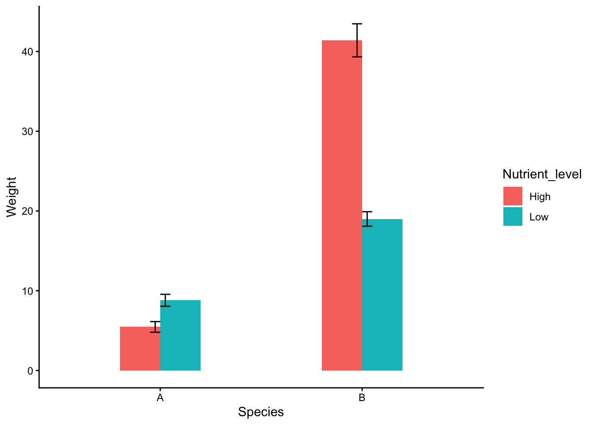
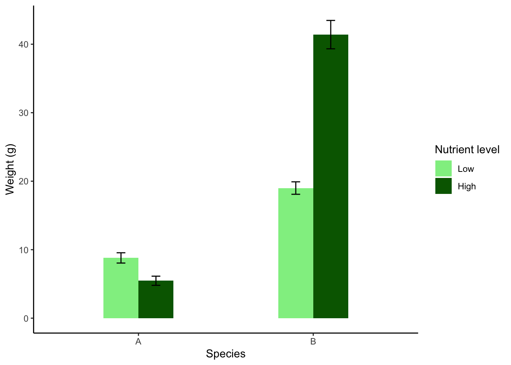

Code
size_nutrient_data<-read.table("data/size_nutrient.txt",header=T,sep="\t",dec=",") I alla tidigare analyser har vi enbart haft en oberoende variabel (predictor). Ofta har vi dock mer än en oberoende variabel, det kan vara att vi vill undersöka effekten av såväl temperatur (hög, låg) som ursprung (nordlig, sydlig) på grodornas utveckling.
Om man har två eller fler faktorer har man möjligheten till en interaktion dvs att responsvariabeln beror på hur de oberoende variablarna interagerar. Exempelvis kanske effekten av temperatur på grodornas utveckling beror på vilket ursprung grodorna har. Interaktioner är oftast mycket intressanta rent biologiskt!
Faktoriella designer är designer med två eller fler faktorer, där alla kombinationer av faktorerna finns. Vi kommer enbart arbeta med exempel där vi bara har två nivåer av varje faktor, eftersom det är enklast att tolka. Metoden klarar dock fler än två nivåer per faktor.
Vi har undersökt två arter av växter, och låtit dem växa i låg och hög näringsnivå. Efter fem veckor har vi vägt dem. Påverkar näringsnivån deras storlek?
Ladda ner följande fil size_nutrient.txt (högerklicka, välj “spara länk som”) och spara filen på din hårddisk i en mapp med ett lämpligt namn.
Fortsätt med att läsa in datasetet och ge det ett namn, i det här fallet kallar vi det size_nutrient_data En detalerad beskrivning i hur man läser in filer finns i vår tidigare tutorial Läsa in data i R.
Glöm inte att dokumentera din kod i ett script, med kommentarer som förklarar vad du gör! Se vår tutorial om script om du behöver påminnelse om hur man skapar och använder script.
Börja med att titta på datans struktur med str().
'data.frame': 60 obs. of 3 variables:
$ Nutrient_level: chr "Low" "Low" "Low" "Low" ...
$ Species : chr "A" "A" "A" "A" ...
$ Weight : int 10 8 9 5 9 10 8 12 5 5 ...$ Nutrient_level: chr betyder att värderna i kolumnen Nutrient_level är karaktärer dvs text och inte siffror.
$ Species: chr betyder att värderna i kolumnen Species är karaktärer dvs text och inte siffror.
$ Weight: int betyder att värderna i kolumnen Weight är heltal
Visa sedan de fem första raderna av ditt dataset med head() för att se att allt ser korrekt ut
Vi gör en enkel graf med boxplot() Eftersom vi har två faktorer behöver vi specificera båda i vår kod, till höger om tilde-tecknet ~.
Hur tolkar du datat? Har arterna olika vikt? Blir de tyngre eller lättare vid hög näring? Eller beror effekten av näring på vilken art det är? Det vill säga, verkar det som vi kan ha en interaktion mellan Näring och Art?
Vi vill nu göra en faktoriell ANOVA för att undersöka om vår responsvariabel (beroende variabel) Weight beror av våra förklarande variabelar (oberoende variabelar) Nutrient_level och Species.
På samma sätt som när vi gjorde regression och envägs-ANOVA specificerar en modell med hjälp av funktionen lm() som står för linjär modell. Vi väljer att spara resultatet i ett objekt som vi kallar m.size_nutrient. Jag föredrar att alla mina modeller (resultat av statistka test) har ett namn som börjar med m. för att jag skall veta vad som är dataset och vad som är modeller. Ge alltid dina modeller beskrivande namn.
I vår modell har vi vår responsvariabel (det vi har på y-axeln) till vänster om tilde-tecknet ~ och våra förklarande faktorer till höger. Eftersom vi har två faktorer behöver vi lägga till båda till höger om tilde-tecknet ~.
Notera att vi har ett multiplikationstecken i vår modell ~ Nutrient_level * Species. Multiplikationstecknet är en genväg som talar om för R att vi vill undersöka effekten av Nutrient_level, effekten av Species, samt interaktionen mellan dem (Nutrient_level: Species). Ett alternativt och mer explicit sätt att skriva modellen är därmed Weight ~ Nutrient_level + Species + Nutrient_level: Species. Det sättet att skriva blir dock väldigt komplicerat om man har fler än två faktorer (dvs det är stor risk för fel i koden).
Vi börjar med en ANOVA-tabell
Analysis of Variance Table
Response: Weight
Df Sum Sq Mean Sq F value Pr(>F)
Nutrient_level 1 1363.3 1363.3 59.377 2.362e-10 ***
Species 1 7981.1 7981.1 347.615 < 2.2e-16 ***
Nutrient_level:Species 1 2483.3 2483.3 108.159 1.083e-14 ***
Residuals 56 1285.7 23.0
---
Signif. codes: 0 '***' 0.001 '**' 0.01 '*' 0.05 '.' 0.1 ' ' 1Vi får en ANOVA-tabell och kan inspektera resultatet. Nu kommer en otroligt viktig detalj för att tolka den. Om modellen innehåller interaktioner skall Anova-tabellen läsas nedifrån och uppåt!
Vi börjar nedifrån och ovanför Residualskommer vår interaktion Nutrient_level:Species ... 1.083e-14 ***. Vi ser att p-värdet är mindre än 0.05, dvs interaktionen är signifikant. Det betyder att Effekten av näring på storleken beror på art. Vi kan alltså inte säga huruvida näring påverkar storleken utan att specificera vilken art vi pratar om. Studera figuren ovan så ser du att det stämmer.
Om interaktionen är signifikant är det inte meningsfullt att tolka varje faktor för sig (oavsett om de är signifikanta eller inte). Man kan ha en situation där det är en signifikant interaktion men ingen av faktorerna har en signifikant effekt i sig själv.
Enbart om interaktionen inte är signifikant går man uppåt i tabellen och kan tolka de enskilda effekterna av faktorerna på vanligt sätt, är de signifikanta så har de effekt på responsvariabeln.
Vi har nu en signifikant interaktion, som tyder på att de olika arterna svarar olika på ökad näring. I grafen ser det ut som om art B definitivt väger mer om näringen ökar, medan art A kanske minskar i vikt. Eller är den oförändrad? Den spontana tanken vore att göra separata t-test för de båda arterna, men man bör genomföra allt i samma analys. Däremot kan vi gå vidare och göra ett post-hoc-test på vår interaktion i paketet emmeans() som vi tidigare använde i vår envägs-ANOVA.
Om interaktionen däremot inte är signifikant, skall du inte göra en post-hoc analys av interaktionen.
Welcome to emmeans.
Caution: You lose important information if you filter this package's results.
See '? untidy'$emmeans
Species = A:
Nutrient_level emmean SE df lower.CL upper.CL
High 5.47 1.24 56 2.99 7.95
Low 8.80 1.24 56 6.32 11.28
Species = B:
Nutrient_level emmean SE df lower.CL upper.CL
High 41.40 1.24 56 38.92 43.88
Low 19.00 1.24 56 16.52 21.48
Confidence level used: 0.95
$contrasts
Species = A:
contrast estimate SE df t.ratio p.value
High - Low -3.33 1.75 56 -1.905 0.0619
Species = B:
contrast estimate SE df t.ratio p.value
High - Low 22.40 1.75 56 12.803 <.0001Som vi ser har vi modifierat vår formel jämfört med när vi gjorde ett posthoc-test i en envägs-ANOVA, eftersom vi nu har två faktorer. pairwise ~ Nutrient_level | Species betyder att vi gör parvisa jämförelser över nivåerna i faktorn Nutrient_level, och att vi gör det separat för de olika nivåerna i faktorn Species.
I våra resultat under $emmeans ser vi medelvärden och standard error för de olika nivåerna av våra faktorer, medan resultaten av post-hoc analysen finns under $contrasts. För art A får vi ett p-värde på 0.0619, dvs vikten hos art A påverkas inte signifikant av näringstillgången (men väldigt nära signifikans…). Om vi tittar på art B så ser vi dock ett p-värde på <.0001, det vill säga art B’s vikt påverkas av näringstillgången.
Vi har en signifikant interaktion mellan näring och art (faktoriell ANOVA, F = 108,2, f.g. = 1 och 56, p < 0.001) vilket betyder att hur vikten påverkas av näring skiljer sig åt för de två arterna. Medan art B väger mer vid hög näring (post-hoc, t = 12.803, df = 56, p < 0.001) har näring ingen effekt på vikten hos art A (post-hoc, t = -1.905, df = 56, p = 0.062). I tillägg till interaktionen är huvudeffekten av såväl näring (F = 59.4, f.g. = 1 och 56, p < 0.001) som art (F = 347,6, f.g. = 1 och 56, p < 0.001) signifikanta.
Var modellen lämplig att använda för ditt dataset?
Vi utvärderar modellen genom diagnostiska grafer genom att använda funktionen plot() på vår statistiska modell.
Vi får fyra grafer att utvärdera, de två första är viktigast. Du kan behöva trycka upprepade gånger på ENTER för att se alla graferna (i R kommer de en och en).
Residuals vs Fitted bör visa en hyfsat rak linje. Den visar hur mycket residualerna (skillnaden mellan dina data och de predikterade värderna) förändras med ökat värde på y-axeln. Residualerna motsvaras av cirklar i grafen. Om du har ett mönster i avvikelserna så betyder det att modellen inta är optimal för dina data.
Normal Q-Q visar om residualerna är normalfördelade. De bör följa den diagonala streckade linjen. Om de avviker på ett systematiskt sätt är residualerna inte perfekt normalfördelade, och vi kan behöva förändra modellen, exempelvis genom att transformera data.
Scale-Location illustrerar om variationen i datat är lika över alla värden. Om variationen ökar mycket åt höger (ett vanligt fall) så har vi större variation vid högre värden. Kan lösas genom att transformera data.
Residuals vs Leverage används för att hitta extremvärden som har onormalt stor påverkan på regressionslinjen. Mönstret i grafen är inte intressant, vi letar efter värden som ligger utanför de grå linjerna, speciellt linjerna för 1. Man bör dubbelkolla sådana värden (outliers) och fundera på om de skall vara med i datasetet. Kanske analysera såväl med som utan extremvärderna?
Vi avslutar med att göra en publiceringsduglig figur, och använder oss av paketet ggplot2. Om du inte sedan tidigare har paketet installerat så gör du det med koden install.packages("ggplot2"). Innan du använder paketet behöver du läsa in det i din session i R genom funktionen library()
Koden bygger på den vi lärde oss under vår tutorial för t-test, och dess huvuddrag förklaras inte närmare här.
De få förändringen är att vi under aes() anger olika faktorer underx =och fill =. x= Species betyder att vi har art på x-axeln, medanfill = Nutrient_level betyder att för varje Art skapar vi två staplar, en för varje nivå på Nutrient_level, och dessa får också olika färg.
Under stat_summary() lägger vi även till position = "dodge", det betyder att de två staplarna (och felstaplarna) skall ligga bredvid varandra och inte ovanpå varandra.
library(ggplot2)
plot.size_nutrient.simple <- ggplot(size_nutrient_data, aes(x = Species, y = Weight, fill = Nutrient_level)) +
stat_summary(geom = "bar", fun = mean, width = 0.4, position = "dodge") +
stat_summary(geom = "errorbar", fun.data = mean_se, width = 0.1, position = "dodge") +
theme_classic()
plot.size_nutrient.simple
Ok, halvbra start men inte mer. Vi måste jobba vidare med den.
När vi använde position = “dodge” så hamnar staplar och felstaplar bredvid varandra. Men eftersom felstaplarna är kodade som smalare (width = 0.1) än staplarna (width = 0.4) så är de inte centrerade över staplarna.
Vi vill välja andra färger, och det skall inte stå Nutrient_level på legenden. Fixas med scale_fill_manual()
Vi vill ha med enhet på y-axel, fixas med ylab()
Det känns mest logiskt att staplarna för Low är till vänster om staplarna för High (man är van att det skall öka när man går åt höger på x-axeln)
library(ggplot2)
manual_dodge <- position_dodge(width = 0.4)
plot.size_nutrient.final <- ggplot(size_nutrient_data, aes(x = Species, y = Weight, fill = factor(Nutrient_level, levels = c("Low", "High")))) +
stat_summary(geom = "bar", fun = mean, width = 0.4, position = manual_dodge) +
stat_summary(geom = "errorbar", fun.data = mean_se, width = 0.1, position = manual_dodge) +
ylab("Weight (g)")+
scale_fill_manual(
name = "Nutrient level",
values = c("Low" = "lightgreen", "High" = "darkgreen"),
limits = c("Low", "High"))+
theme_classic()
plot.size_nutrient.final
Lösningen på problemet med de icke centrerade felstaplarna är att skapa en manuell dodge som är frikopplad från den faktiska bredden på staplar och felstaplar, det gör vi genom att lägga till en rad innan grafen
manual_dodge <- position_dodge(width = 0.4)
Sorteringen av staplarna så att Low är till vänster om High kan antingen göras direkt i datasetet med koden size_nutrient_data$Nutrient_level <- factor(size_nutrient_data$Nutrient_level,levels = c("Low", "High")), då kommer de i rätt ordning. För att illustrera ett alternativ så ändrar jag det enbart i grafen istället, sker under aes() med koden fill = factor(Nutrient_level, levels = c("Low", "High")).